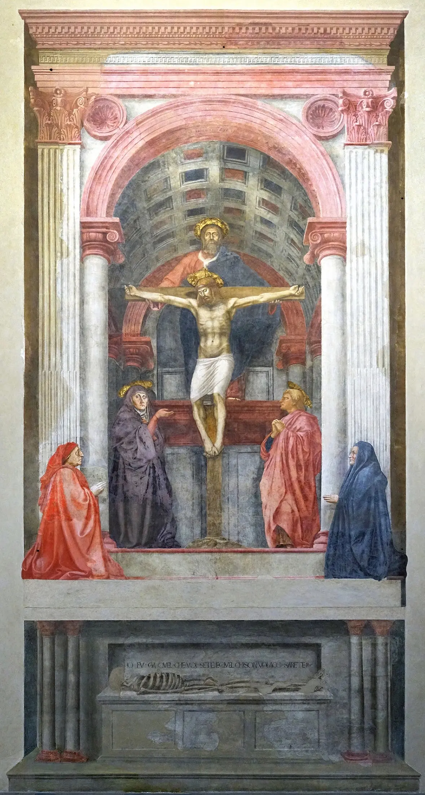
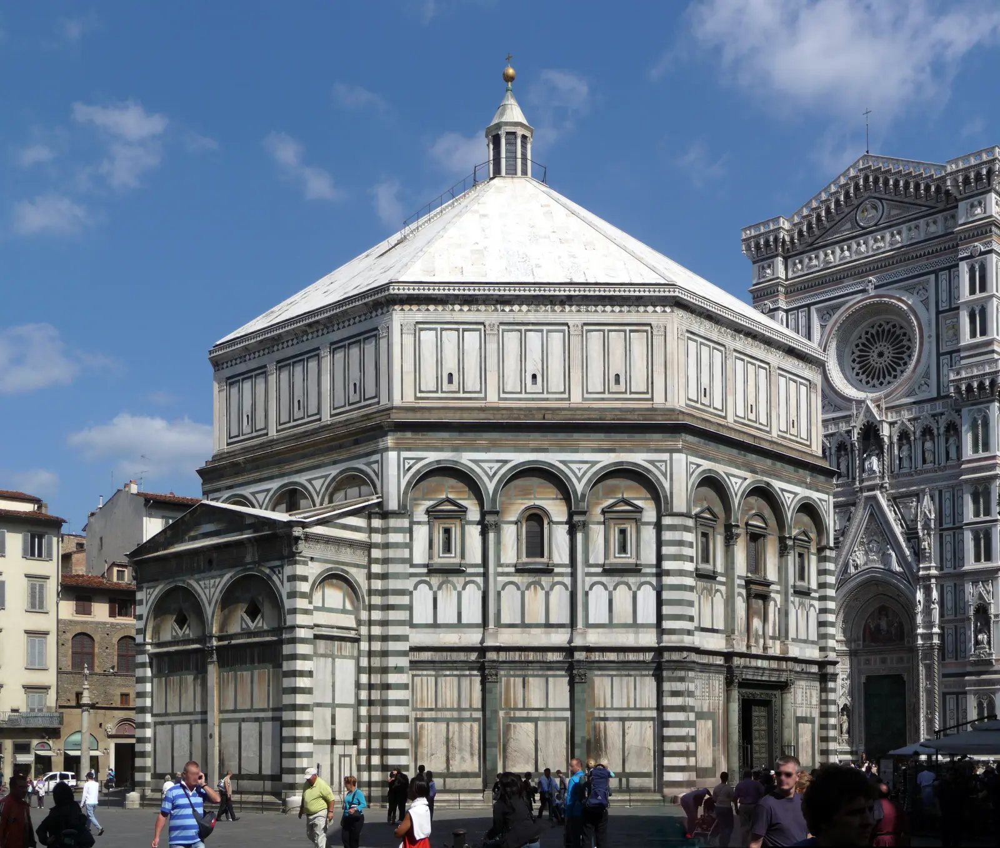
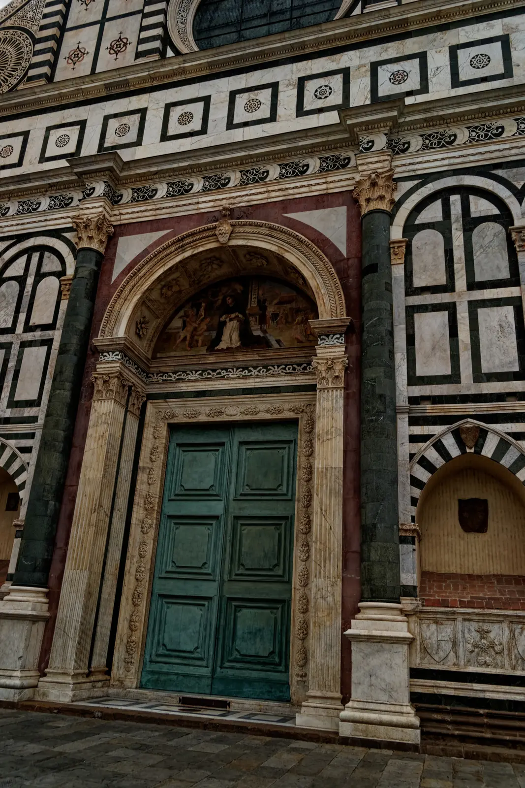
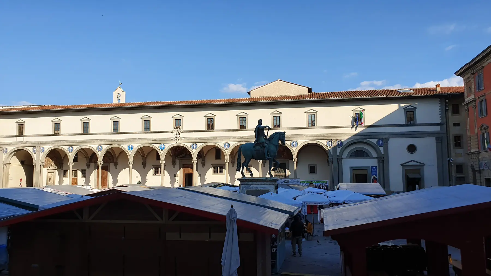
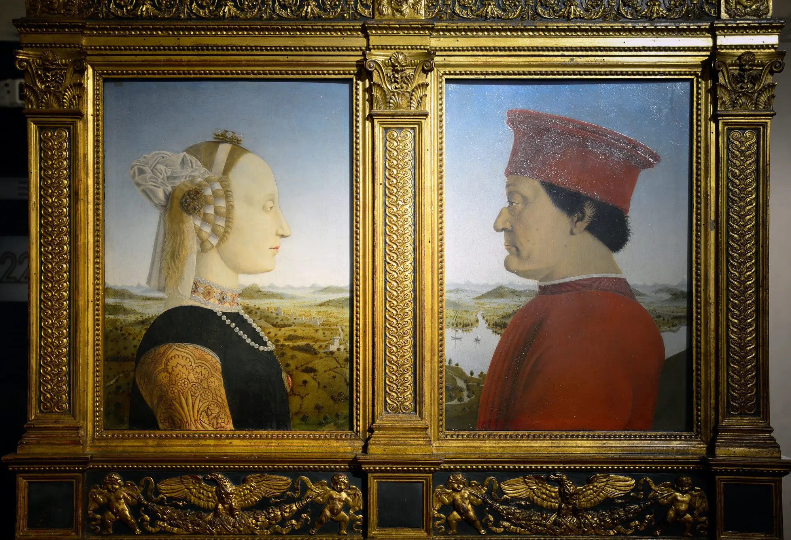
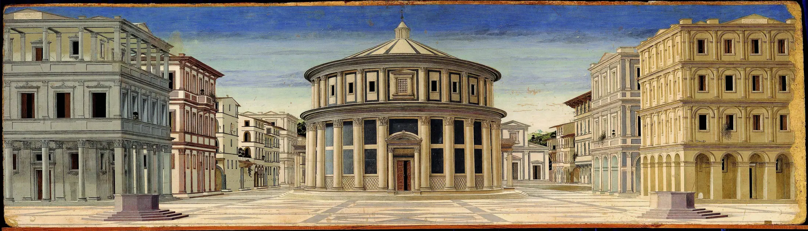

Il muro resta materiale: intonaco, pigmento, limite.

01 · Guarda prima di sapere
Che cosa accade quando un’immagine pretende di misurare il mondo?
Dove cade per primo il tuo sguardo?
La parete sembra ancora una superficie?
Quale figura senti più vicina?
Dove immagini di trovarti?
Da quale altezza sembra costruito lo spazio?
Le figure appartengono allo stesso luogo?
L’architettura invita a entrare?
C’è un punto che sembra ordinare tutto?
02
Da abitare a misurare
Dal modulo 07
Giotto aveva dato peso ai corpi.
Ora le distanze diventano verificabili.
La scena giottesca usa piani, sovrapposizioni, scorci, gesti e dimensioni relative. È abitabile senza dipendere da un unico punto di fuga. Il Quattrocento non corregge un errore: formula un problema nuovo, costruire distanze prevedibili da una posizione precisa.

- Corpiacquistano peso
- Spaziodiventa credibile
- Distanzechiedono una regola
- Immaginecostruisce un osservatore
Indizi coordinati rendono la scena percorribile con lo sguardo.
Orizzonte, ortogonali e intervalli organizzano le distanze.
Il corpo reale viene assegnato a una posizione ideale.
03
Città, corti, denaro e sapere
Quattrocento · molte Italie
Le opere nascono da reti di dipendenze.
Firenze repubblicana, Venezia, Urbino, Mantova, Roma e altri centri competono e circolano. Famiglie, corporazioni, istituzioni religiose, corti e governi finanziano cantieri; botteghe e artigiani trasformano risorse in immagini. La visibilità resta diseguale.
Seleziona un attore. Il “genio” non sparirà, ma tornerà dentro il lavoro, i contratti e le relazioni che lo rendono possibile.
Un limite sociale. Donne, lavoratori, poveri, stranieri e gruppi subordinati partecipano alla città, ma raramente controllano la committenza o ottengono una memoria monumentale. “L’individuo rinascimentale” non coincide con ogni essere umano.
04
La ragione non nasce nel Quattrocento
Diagramma didattico · non genealogia certa
Da dove viene una regola?
Geometria antica, ottica, traduzioni, misurazione del terreno, cantiere e bottega preparano problemi comuni. Ibn al-Haytham elaborò una teoria della visione tradotta nel mondo latino; questo documenta una lunga circolazione dell’ottica, non una linea diretta e dimostrata fino a Brunelleschi.
Regola
pittorica
pittorica
Attiva i sette nodi. Le connessioni indicano convergenze possibili, non rapporti causali automatici.
testo o oggetto conservatocontinuità culturaleipotesi storiografica

05
Brunelleschi · un esperimento che non possediamo più
Firenze · prima metà del Quattrocento
Funziona soltanto da qui.
Antonio Manetti, negli anni Ottanta del Quattrocento, descrive una piccola tavola del Battistero osservata dal retro attraverso un foro e riflessa in uno specchio. Le tavolette non sono conservate; ricostruiamo procedura e significato confrontando testimonianze successive.
Ricostruzione didattica basata sulle testimonianze disponibili; l’originale non è conservato.
06
Alberti · la pittura come costruzione
De pictura · 1435 in latino, 1436 circa in volgare
Una finestra è anche un confine.
Alberti organizza in un trattato destinato a grande influenza il rapporto fra piramide visiva, piano dell’immagine, pavimento, proporzione delle figure e composizione della storia. Non “inventa tutto”: traduce problemi teorici e pratici in un metodo comunicabile.
La superficie è pensata come intersezione della piramide visiva. La metafora della finestra comporta selezione: stabilisce un davanti e un dietro, rende visibile una parte del mondo e ne lascia un’altra fuori.
occhiopiano
dell’immaginespazio
costruito
dell’immaginespazio
costruito
Diagramma teorico: le linee rappresentano relazioni geometriche, non raggi fisici visibili nell’aria.

07
Interazione principale · Costruisci lo spazio
Sette decisioni
La profondità non compare.
La costruisci.
Procedi per passaggi, poi altera orizzonte e punto di fuga. Ogni operazione è tecnica e culturale insieme: stabilisce che cosa diventa coerente e da dove deve essere guardato.
La cornice è visibile; gli altri elementi attendono di essere costruiti.
0 / 7 passaggi completati
Costruisci il primo passaggio
Scegli “cornice” per distinguere la superficie reale dal mondo rappresentato.
La prospettiva non si limita ad aggiungere profondità. Costruisce il mondo rappresentato in relazione a un osservatore determinato. Un unico punto di fuga è una regola storica potente, non il modo naturale e inevitabile di vedere.
08
La parete diventa architettura
Ritorno all’opera · identificazione ancora sospesa
Dove devi stare perché la parete si apra?
La geometria non è una dimostrazione separata dal significato. Collega pavimento reale, committenti, spazio sacro e sepolcro; fa coincidere il luogo del fedele con una successione verticale fra morte e salvezza.
Dato e interpretazione. La convergenza delle linee può essere verificata; il modo in cui essa articola morte, mediazione e salvezza richiede una lettura storica. L’identità dei committenti non è accertata definitivamente.
09
La misura esce dal quadro
Confronto · La profondità senza una tela
Una cultura visuale attraversa materie diverse.
Architettura, rilievo e pittura condividono proporzione e organizzazione dello spazio, ma non diventano la stessa cosa. Scegli il caso e la categoria.


10
L’individuo entra nell’immagine?
Persona, ruolo o immagine?
Il ritratto non consegna una persona senza mediazioni.
Profilo, abiti, paesaggio, iscrizioni e relazione fra i coniugi costruiscono rango, territorio, memoria dinastica e virtù. Il volto non autorizza una diagnosi psicologica.
11
Misurare la città, rappresentare il potere

Ordinare significa anche governare?
La piazza è vuota.
Il potere, no.
Assi, accessi, edifici dominanti e proporzioni rendono lo spazio leggibile e celebrabile. Non sappiamo se la tavola descrivesse un progetto realizzabile: può elaborare un ideale politico e visivo più che un piano urbanistico.
Misurare può rendere costruibile, comunicabile e bello; può anche stabilire gerarchie. Prospettiva, cartografia e dominio politico non sono la stessa cosa, ma possono entrare nella medesima cultura dell’ordine.
12
Un solo punto di vista?
Quattro opere · nessuna classifica
La coerenza geometrica non coincide con la qualità artistica.
Ogni opera seleziona regole coerenti con funzione, supporto e pubblico. Anche una costruzione rigorosa può restare semanticamente enigmatica; ciò che sfugge al sistema non è necessariamente un errore.
Se il mondo dipende dal luogo dal quale viene guardato, quanto può essere davvero universale la sua misura?
Ritorno all’immagine iniziale
Ora l’opera può dire il proprio nome.
Il tuo primo sguardo
Non hai ancora scritto un’annotazione.
13
Verifica e recupero
Dodici relazioni, non dodici date
Hai trovato il tuo punto?
Un errore apre un recupero diverso e blocca la prosecuzione finché il collegamento non viene ricostruito. Il blocco resta attivo anche dopo il reload.
Domanda 1 di 12
Soglia · verso il modulo 09
Il Rinascimento ha dato al mondo una misura e all’osservatore un posto.
Lo spazio viene costruito attraverso regole che collegano immagine, distanza e posizione di chi guarda. Il mondo appare ordinabile, ma quell’ordine dipende sempre da dove qualcuno viene collocato.
Prossimo modulo09 — La forma perde la quieteManierismo · La crisi dell’equilibrioTorna a Storia dello sguardoRicerca e trasparenza
Fonti, opere, licenze.
Le fonti distinguono oggetti conservati, documenti, testimonianze successive e interpretazioni. Wikimedia Commons è usato per reperire riproduzioni e licenze, non come fondamento storico.
Fonti storico-artistiche
Santa Maria Novella · Trinità di Masaccio
National Gallery · Brunelleschi, Manetti e le tavolette perdute
Università di Bielefeld · Brunelleschi’s perspective panels
SUNY Oneonta · Alberti, On Painting, estratti
Gallerie degli Uffizi · facciata di Santa Maria Novella
Museo degli Innocenti · percorso architettura
Opera del Duomo di Siena · fonte battesimale e Donatello
National Gallery · Paolo Uccello, Battaglia di San Romano
Galleria Nazionale delle Marche · Flagellazione
Storia della visione e contesto
Stanford Encyclopedia of Philosophy · Ibn al-Haytham e ricezione latina
Cambridge University Press · ottica araba e prospettiva
Metropolitan Museum · Firenze e Italia centrale, 1400–1600
National Gallery · conservazione della Battaglia di San Romano
Opera del Duomo di Siena · conservazione del Banchetto di Erode
Registro delle immagini locali
| File locale | Opera / soggetto | Fonte e licenza |
|---|---|---|
| opening-architecture.webp | Masaccio, Trinità | Wikimedia Commons · pubblico dominio |
| giotto-memory.webp | Giotto e bottega, Incontro alla Porta Aurea | Wikimedia Commons · pubblico dominio; già registrata nel modulo 07 |
| florence-baptistery.webp | Battistero di Firenze | Wikimedia Commons · CC BY-SA 3.0 |
| innocenti-loggia.webp | Ospedale degli Innocenti | Wikimedia Commons · CC BY-SA 4.0 |
| alberti-facade.webp | Facciata di Santa Maria Novella | Wikimedia Commons · CC BY-SA 4.0 |
| donatello-feast.webp | Donatello, Banchetto di Erode | Wikimedia Commons · CC BY 3.0 |
| uccello-san-romano.webp | Paolo Uccello, Battaglia di San Romano | Wikimedia Commons · pubblico dominio |
| piero-flagellation.webp | Piero della Francesca, Flagellazione | Wikimedia Commons · pubblico dominio |
| urbino-diptych.webp | Piero della Francesca, Federico e Battista | Wikimedia Commons · CC BY-SA 4.0 |
| ideal-city.webp | Anonimo, Città ideale | Wikimedia Commons · pubblico dominio |
{kind=link}
{kind=link}
{kind=link}
{kind=link}
{kind=link}
_01.jpg){kind=link}
{kind=link}
{kind=link}
{kind=link}